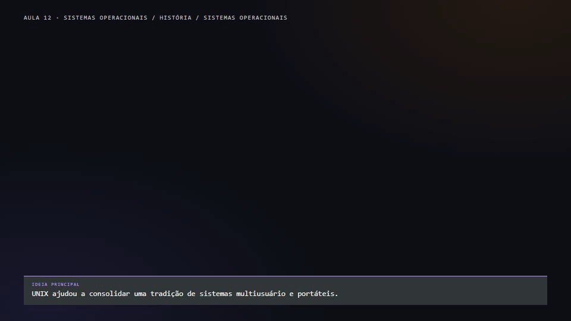

O núcleo
Gerencia recursos como processos, memória e acesso a dispositivos, oferecendo serviços aos programas. No WSL 2, o kernel é integrado ao ambiente WSL.
uname -rO comando mostra o kernel em execução, não a versão do Ubuntu.
AULA 12 · LINUX NA PRÁTICA
Aprenda a organizar os arquivos da Aurora, editar documentos e entender permissões usando Ubuntu no WSL.
CONTEXTO · UMA HISTÓRIA EM EVOLUÇÃO
Desde o início do Linux, em 1991, comunidades e organizações criaram diferentes distribuições para reunir programas e ferramentas em sistemas com objetivos variados. A árvore abaixo apresenta apenas algumas relações históricas.

🐧 Ecossistema Linux · 1991
Os ramos são uma seleção, não um catálogo completo. Há outras relações: por exemplo, a edição LMDE do Linux Mint é baseada diretamente no Debian.
O Ubuntu é uma das distribuições disponíveis para o laboratório no WSL. A versão instalada no seu computador pode ser diferente da usada nos exemplos.
01 · PREPARAÇÃO
Se o Ubuntu já está funcionando, abra apenas os itens de verificação necessários e prossiga para a aula. Os roteiros abaixo ficam recolhidos para consulta.
No Windows, abra o PowerShell e execute:
wsl --list --verboseConfira se Ubuntu aparece na lista e se a coluna VERSION indica 2. Running e Stopped indicam o estado da distribuição, não sua versão. A saída varia conforme as instalações existentes.
Abra o Ubuntu pelo menu Iniciar e conclua a criação de usuário se for a primeira execução. A senha digitada no terminal pode não aparecer na tela.
Em um Windows compatível, abra o PowerShell como administrador e execute:
wsl --install -d UbuntuConclua as etapas exibidas, reinicie se solicitado, abra o Ubuntu e crie sua conta Linux. Confirme novamente a versão com wsl --list --verbose. A instalação pode exigir acesso à internet, suporte a virtualização e permissões administrativas. Em computadores institucionais, siga as orientações do responsável.
Se a distribuição já estiver instalada como WSL 1, consulte a documentação antes de uma conversão: não reinstale ou remova uma distribuição existente sem preservar seus dados.
No Ubuntu, execute as consultas abaixo. Se uma ferramenta não existir, o terminal poderá mostrar command not found.
whoami
python3 --version
curl --version
nano --version
ip -VPara instalar o conjunto usado nos laboratórios, se necessário e com acesso à internet:
sudo apt update
sudo apt install -y nano curl iproute2 iputils-ping python3sudo solicita privilégios administrativos; apt update atualiza a lista de pacotes e apt install instala os pacotes indicados. A senha é a da sua conta Linux, quando solicitada.
02 · COMPREENDER
O Windows é o sistema do computador. O WSL oferece o ambiente para executar uma distribuição Linux; aqui usaremos o Ubuntu. O terminal apresenta a interface, e o shell interpreta os comandos. A mesma máquina pode ter mais de uma distribuição instalada.
Um prompt como aluno@computador:~$ apresenta uma identidade e um local. Nome do usuário, computador e formato podem variar.
whoami
id
uname -a
cat /etc/os-releasewhoami mostra o usuário efetivo; id apresenta identificadores e grupos. uname -a informa características do kernel, e /etc/os-release identifica a distribuição.
COMO O SISTEMA SE ORGANIZA
Estas três perspectivas ajudam a compreender o ambiente usado no laboratório. Elas se relacionam: não são três partes totalmente independentes.
Gerencia recursos como processos, memória e acesso a dispositivos, oferecendo serviços aos programas. No WSL 2, o kernel é integrado ao ambiente WSL.
uname -rO comando mostra o kernel em execução, não a versão do Ubuntu.
Uma distribuição reúne software em pacotes. No Ubuntu, o gerenciador APT pode instalar ferramentas e suas dependências a partir dos repositórios configurados.
apt list --installedA listagem pode ser extensa; versões e pacotes variam em cada instalação.
Drivers permitem que o sistema interaja com dispositivos. Muitos fazem parte do kernel ou podem ser carregados como módulos; há também componentes de suporte fora dele.
ls /sys/classNo WSL, dispositivos e recursos físicos passam por uma integração com o Windows; nem todo hardware aparece como em uma instalação Linux direta.
Para identificar a distribuição, use cat /etc/os-release. Um número de versão do Ubuntu e um número de versão do kernel descrevem componentes diferentes.
03 · NAVEGAÇÃO
A raiz da árvore Linux é /. O atalho ~ representa o diretório pessoal. . indica o diretório atual; .., seu pai. No WSL, /mnt/c normalmente permite acessar a unidade C: quando montada.
Um caminho absoluto começa em /, como /home/aluno/aurora. Um caminho relativo, como financeiro/relatorio.txt, depende de onde você está. Em nomes com espaços, use aspas: cd "meus arquivos".
pwd
ls
ls -la
cd ..
cd ~pwd mostra o diretório atual; ls lista entradas. A opção -l detalha informações e -a inclui nomes iniciados por ponto. cd muda o diretório.
pwd e ls -la.cd .. e consulte pwd novamente.cd ~.As pastas da sua máquina podem ser diferentes das que aparecem nos exemplos.
04 · ORGANIZAÇÃO
A empresa separa documentos do Financeiro e do Atendimento e reserva uma área para arquivos compartilhados e scripts. Todas as atividades usam arquivos fictícios criados por você.
~/aurora/
├── financeiro/
├── atendimento/
├── compartilhado/
└── scripts/Podemos criar uma pasta por vez com mkdir. Para criar a estrutura completa, o shell expande os nomes entre chaves; -p cria pais necessários:
mkdir -p ~/aurora/{financeiro,atendimento,compartilhado,scripts}
ls ~/auroraUse touch para criar um arquivo vazio ou atualizar sua data; use find para percorrer diretórios e procurar nomes.
touch ~/aurora/financeiro/relatorio.txt
find ~/aurora -name 'relatorio.txt'05 · EDIÇÃO
O nano é um editor que funciona dentro do terminal. Abra o relatório fictício:
cd ~/aurora/financeiro
nano relatorio.txtcat relatorio.txt e, se desejar, reabra com nano.No rodapé do nano, ^O significa Ctrl+O. Se não encontrar o arquivo, verifique o diretório com pwd e o nome com ls.
06 · ARQUIVOS
cp cria uma cópia; mv move ou renomeia. Confira origem e destino antes de executar: nomes existentes podem ser sobrescritos, dependendo do comando e das opções.
cd ~/aurora/financeiro
cp relatorio.txt ../compartilhado/
mv ../compartilhado/relatorio.txt ../compartilhado/copia-relatorio.txt
find ~/aurora -name '*relatorio*'Liste as duas pastas após os comandos. O relatório original continua em Financeiro; o nome da cópia mudou na pasta compartilhada.
07 · ACESSO
Um arquivo tem proprietário e grupo. No modelo básico, permissões são avaliadas para proprietário, grupo e outros: r é leitura, w é escrita e x é execução. Em diretórios, x permite atravessar ou acessar entradas conforme as demais regras.
ls -l ~/aurora/financeiro/relatorio.txt
idEm um exemplo como -rw-r-----, o primeiro caractere representa o tipo; os três grupos seguintes representam proprietário, grupo e outros. Proprietário lê e escreve; o grupo lê; outros não recebem bits de acesso nesse exemplo.
touch ~/aurora/scripts/script.sh
chmod u+x ~/aurora/scripts/script.sh
ls -l ~/aurora/scripts/script.shu+x adiciona execução ao proprietário e preserva os demais bits. Isso não cria conteúdo executável no arquivo.
Na notação octal, leitura vale 4, escrita 2 e execução 1. 600 define leitura e escrita para o proprietário e zero bits para grupo e outros. Já 755 define rwxr-xr-x; não é equivalente a apenas acrescentar u+x.
chmod 600 ~/aurora/financeiro/relatorio.txt
ls -l ~/aurora/financeiro/relatorio.txtO acesso efetivo também depende dos diretórios do caminho, da identidade, de possíveis ACLs e do sistema de arquivos. Uma comparação com a Aula 11: Windows usa ACLs NTFS; Linux possui bits básicos e também pode utilizar ACLs.
08 · INTEROPERABILIDADE
Em ~/aurora, pratique no sistema de arquivos Linux da distribuição. Em /mnt/c, o acesso envolve o Windows. As permissões apresentadas e o efeito de chmod dependem das opções de montagem e dos metadados configurados; sem metadados, as permissões são derivadas das permissões Windows. Não se pode obter acesso que a conta Windows não possui.
Em uma pasta sua sob /mnt/c, crie um arquivo de teste vazio. Compare ls -l e o efeito de chmod 600 com um arquivo de teste em ~/aurora. Os resultados variam; anote a observação e não altere arquivos de outras pessoas.
sudo executa um comando com privilégios elevados quando autorizado. Confira o comando e o caminho antes de usá-lo. Remoções recursivas, especialmente rm -rf, podem apagar muitos dados: não são necessárias para este laboratório.
09 · LABORATÓRIO INTEGRADO
Faça os exercícios no Ubuntu do WSL. Abra cada item para ver a tarefa e a forma de conferir o resultado; use apenas arquivos fictícios do laboratório.
Use whoami, id e cat /etc/os-release para descobrir sua identidade, grupos e distribuição. Confira se os nomes correspondem ao seu ambiente.
Use pwd e ls -la. Diferencie o diretório atual de entradas ocultas.
Crie financeiro, atendimento, compartilhado e scripts dentro de ~/aurora; confira com find ~/aurora -maxdepth 1 -type d.
Abra ~/aurora/financeiro/relatorio.txt no nano, escreva um texto fictício, salve, saia e confirme com cat.
Copie o relatório para compartilhado e renomeie a cópia. Confirme que o original permanece no Financeiro.
Use find para localizar relatorio.txt a partir de ~/aurora. Confira o caminho encontrado.
Use ls -l no relatório e identifique tipo, proprietário, grupo e bits de acesso.
Crie um arquivo de teste em ~/aurora/scripts, aplique chmod u+x e depois chmod 755. Compare os resultados e explique por que os comandos não são equivalentes.
Use somente um arquivo de teste criado por você em uma pasta própria em /mnt/c e outro em ~/aurora. Compare ls -l e o efeito de chmod 600; explique por que o resultado pode variar conforme metadados e permissões Windows.
No próprio arquivo de teste, use chmod 600, consulte ls -l e teste leitura e gravação com sua conta. Explique o que esse teste demonstra e o que ele não prova sobre outros usuários.
10 · REVISÃO
Escolha uma alternativa e verifique sua resposta. Você pode tentar novamente. O feedback é processado nesta página.